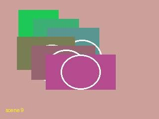
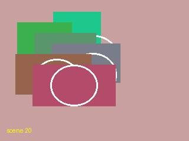
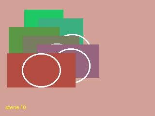
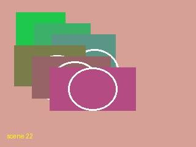
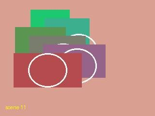
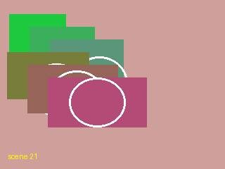

measured interpolated (0)
Open this area in OpenStreetMap (needs a connection)Stops
Vienna, Austria
15:15–15:15 · 0 min · 1 items

b4fcf14742c7f8e8
15:15 · offset_gps_conflict.jpg Vienna, Austria
23:10–23:10 · 0 min · 1 items
{kind=link}

47dffa4af88ebda9
23:10 · tz_before_1.jpg Eminoenue, TR
00:10–00:10 · 0 min · 1 items
{kind=link}

5b95a4a67bee41ab
00:10 · tz_after_1.jpg Vienna, Austria
23:20–23:20 · 0 min · 1 items
{kind=link}

b13ab5922844fe9e
23:20 · tz_before_2.jpg Eminoenue, TR
00:20–00:30 · 10 min · 2 items
{kind=link}

1306642620475df6
00:30 · tz_after_3.jpg Vienna, Austria
23:30–23:30 · 0 min · 1 items
{kind=link}

f78e70b9d0d9972d
23:30 · tz_before_3.jpg Everything from this day (7)
b4fcf14742c7f8e8
15:15 · offset_gps_conflict.jpg 47dffa4af88ebda9
23:10 · tz_before_1.jpg 5b95a4a67bee41ab
00:10 · tz_after_1.jpg b13ab5922844fe9e
23:20 · tz_before_2.jpg {kind=link}

c5c849ad74ee2683
00:20 · tz_after_2.jpg 1306642620475df6
00:30 · tz_after_3.jpg f78e70b9d0d9972d
23:30 · tz_before_3.jpg